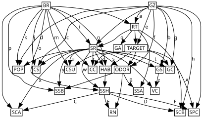

Prediction with CSlearn: Mushroom Example
This notebook shows how to apply CSlearn to a real dataset and use the fitted model for prediction. We use the UCI Mushroom dataset (8124 samples, 22 categorical features) and predict whether a mushroom is poisonous or not.
The workflow has two steps:
Fit — learn a CStree from training data via
CStree.fit().Predict — call
tree.predict(partial_observations)on held-out test data.
Requires internet: the dataset is downloaded from the UCI repository via ucimlrepo.fetch_ucirepo.
[1]:
import pickle
import warnings
from pathlib import Path
warnings.simplefilter(action="ignore", category=FutureWarning)
import numpy as np
import pandas as pd
from sklearn.model_selection import train_test_split
from sklearn.preprocessing import OrdinalEncoder
from sklearn.metrics import confusion_matrix, accuracy_score
from ucimlrepo import fetch_ucirepo
import cslearn
from cslearn.cstree import CStree
Load and preprocess the data
We fetch the dataset from the UCI repository, drop the constant veil-type column, ordinally encode all features, and split into 70% train / 30% test.
[2]:
mushroom = fetch_ucirepo(id=73)
data = pd.concat([mushroom.data.features, mushroom.data.targets], axis=1)
data.dropna(inplace=True)
data.drop("veil-type", axis=1, inplace=True) # constant column
encoder = OrdinalEncoder()
ordinalized = encoder.fit_transform(data.values).astype(int)
data = pd.DataFrame(ordinalized, columns=data.columns)
cards = data.nunique().values
train, test = train_test_split(data, test_size=0.3, random_state=0)
print(f"Train: {len(train)} rows | Test: {len(test)} rows | Variables: {len(cards)}")
print(f"Cardinalities: {cards.tolist()}")
Train: 3950 rows | Test: 1694 rows | Variables: 22
Cardinalities: [6, 4, 8, 2, 7, 2, 2, 2, 9, 2, 4, 4, 4, 7, 7, 2, 3, 4, 6, 6, 6, 2]
Fit the model
CStree.fit() runs the three-phase CSlearn pipeline: GRaSP for candidate parent sets, an order MCMC (Gibbs sampler) for the MAP variable ordering, and an exact staging search under the β ≤ 2 constraint, followed by MAP parameter estimation. On this dataset (22 variables, 3950 training rows) it takes a few minutes, so the fitted model is cached to mushroom-opt_tree.pkl alongside this notebook and loaded below. To regenerate it, run the commented fit() call.
[3]:
# The cached pickle ships in the repo's notebooks/ directory. Resolve it from
# the installed package location so this works from any working directory
# (e.g. when the notebook is executed from docs/source/ during a docs build).
pkl_path = Path(cslearn.__file__).resolve().parents[2] / "notebooks" / "mushroom-opt_tree.pkl"
# To regenerate the pickle instead of loading it (takes a few minutes):
# train_with_cards = train.copy()
# train_with_cards.loc[-1] = cards
# train_with_cards = train_with_cards.reindex(np.roll(train_with_cards.index, 1)).reset_index(drop=True)
# np.random.seed(0); random.seed(0)
# opt_tree = CStree().fit(train_with_cards, gibbs_samples=5000, save_as="mushroom")
with open(pkl_path, "rb") as f:
opt_tree = pickle.load(f)
Predict on test data
predict(partial_observations) takes a DataFrame of partial observations and returns a DataFrame of predicted values for the unobserved variables. Here we predict the poisonous label from all other features.
[4]:
predict_from = test.drop("poisonous", axis=1)
true_labels = test["poisonous"].values
predictions = opt_tree.predict(predict_from)
predictions.head()
[4]:
| poisonous | |
|---|---|
| 0 | 1 |
| 1 | 0 |
| 2 | 0 |
| 3 | 0 |
| 4 | 0 |
Evaluate
We report overall accuracy and the confusion matrix.
[5]:
pred_labels = predictions["poisonous"].values
acc = accuracy_score(true_labels, pred_labels)
print(f"Accuracy: {acc:.4f}")
cm = confusion_matrix(true_labels, pred_labels)
print("Confusion matrix (rows=true, cols=predicted):")
print(pd.DataFrame(cm, index=["edible", "poisonous"], columns=["pred edible", "pred poisonous"]))
Accuracy: 0.9581
Confusion matrix (rows=true, cols=predicted):
pred edible pred poisonous
edible 1023 30
poisonous 41 600
Prediction with confidence scores
Pass return_probs=True to get the conditional probability of the MAP prediction given the observed features.
[6]:
predictions_with_probs = opt_tree.predict(predict_from.head(5), return_probs=True)
predictions_with_probs
[6]:
| poisonous | PROB | |
|---|---|---|
| 0 | 1 | 0.999255 |
| 1 | 0 | 0.999967 |
| 2 | 0 | 0.999939 |
| 3 | 0 | 0.998355 |
| 4 | 0 | 0.999957 |
LDAG visualization
Convert the fitted CStree to an LDAG and export it for the paper. Edge labels (CSI context strings) are replaced with single letters via with_legend=True – some run up to ~80 characters, which otherwise dominates the layout’s width far more than the 22 node labels do. The letter-to-context mapping is printed below for the paper’s legend table.
[7]:
from string import ascii_letters
ldag = opt_tree.to_LDAG()
letter_of = {}
_strs = iter(ascii_letters)
for pa, ch, attr in ldag.edges(data=True):
if "label" not in attr:
continue
letter_of[(pa, ch)] = next(_strs)
# Full node names (e.g. "stalk-surface-above-ring") dominate the layout's
# width even more than the edge labels; abbreviate to short mnemonic codes,
# applied before layout so box sizes reflect the abbreviation.
NODE_ABBREV = {
"stalk-surface-above-ring": "SSA", "stalk-surface-below-ring": "SSB",
"stalk-color-above-ring": "SCA", "stalk-color-below-ring": "SCB",
"spore-print-color": "SPC", "gill-attachment": "GA", "gill-spacing": "GS",
"gill-color": "GC", "gill-size": "GZ", "cap-shape": "CS", "cap-surface": "CSU",
"cap-color": "CC", "stalk-shape": "SSH", "stalk-root": "SR", "veil-color": "VC",
"ring-number": "RN", "ring-type": "RT", "population": "POP", "habitat": "HAB",
"bruises": "BR", "odor": "ODOR", "poisonous": "TARGET",
}
assert set(NODE_ABBREV) == set(ldag.nodes()), set(ldag.nodes()) ^ set(NODE_ABBREV)
assert len(set(NODE_ABBREV.values())) == len(NODE_ABBREV), "duplicate abbreviations"
agraph, legend = ldag.plot_graphviz(
with_legend=True, nodesep="0.075", ranksep="0.115", margin="0.021,0.013",
node_labels=NODE_ABBREV,
)
agraph.draw("mushroom-ldag.pdf")
# Losslessly crop to the drawing's ink bounding box (+3pt margin) by
# rewriting the page box in place -- no re-rendering, so the embedded 10pt
# font is untouched. Requires ghostscript on PATH (`nix-shell -p ghostscript`
# if not already available) and the `pikepdf` package.
import subprocess
import pikepdf
def crop_to_content(path, margin=3.0):
result = subprocess.run(
["gs", "-q", "-dBATCH", "-dNOPAUSE", "-sDEVICE=bbox", path],
capture_output=True, text=True, check=True,
)
line = [l for l in result.stderr.splitlines() if l.startswith("%%HiResBoundingBox:")][0]
x0, y0, x1, y1 = (float(v) for v in line.split(":")[1].split())
box = pikepdf.Array([x0 - margin, y0 - margin, x1 + margin, y1 + margin])
pdf = pikepdf.open(path, allow_overwriting_input=True)
pdf.pages[0].MediaBox = box
pdf.pages[0].CropBox = box
pdf.save(path)
crop_to_content("mushroom-ldag.pdf")
for letter, context in legend.items():
print(f"{letter}: {context}")
agraph
Warning: different sized vanishing sets
Warning: different sized vanishing sets
Warning: different sized vanishing sets
Warning: different sized vanishing sets
Warning: different sized vanishing sets
Warning: different sized vanishing sets
Warning: different sized vanishing sets
Warning: different sized vanishing sets
Warning: different sized vanishing sets
Warning: different sized vanishing sets
a: [[1]]
b: [[3]]
c: [[0, 1], [1, 1], [3]]
d: [[0, 1], [1, 1], [3]]
e: [[1], [2]]
f: [[0, 0], [1, 0], [2, 0], [3, 0]]
g: [[0, 0], [1, 0], [2, 0], [3, 0]]
h: [[1], [2], [3, 0], [3, 1]]
i: [[0, 0], [0, 1], [0, 2], [0, 3]]
j: [[0, 0], [1, 0], [0, 2], [1, 2], [3]]
k: [[0, 0], [1, 0], [0, 2], [1, 2], [3]]
l: [[0, 0], [1, 0], [2, 0], [3, 0]]
m: [[0, 0], [1, 0], [2, 0], [3, 0]]
n: [[0, 0], [1, 0], [2, 0], [3, 0]]
o: [[0, 1], [1, 1], [2, 1], [3, 1], [2], [3], [4], [0, 5], [1, 5], [2, 5], [3, 5]]
p: [[0, 0], [1, 0], [2, 0], [3, 0], [1], [0, 3], [1, 3], [2, 3], [3, 3], [4], [6]]
q: [[1, 0], [1, 1]]
r: [[0, 1], [1, 1]]
s: [[0, 1], [1, 1]]
t: [[0, 1], [1, 1]]
u: [[0, 1], [1, 1]]
v: [[0, 1], [1, 1]]
w: [[0, 0], [1, 0], [2], [3], [4]]
x: [[1, 0], [1, 1]]
y: [[1], [0, 2], [1, 2], [4], [0, 5], [1, 5], [6]]
z: [[0], [2], [3]]
A: [[1, 0], [1, 1]]
B: [[0], [1], [2]]
C: [[0, 0], [0, 1], [0, 2], [0, 3]]
D: [[0, 0], [1, 0], [1], [2]]
E: [[0], [1], [2], [3], [4], [6]]
F: [[0, 0], [0, 1]]
[7]:

Semantic edge-label context table
Translate each edge’s context (currently only shown as raw encoded values above) into real feature names and categories, using the fitted OrdinalEncoder’s categories_. Matches ALARM’s table style: one row per edge label, joining that label’s CSI relations within the cell.
[8]:
_, contexts = opt_tree.to_LDAG(return_contexts=True)
col_idx_of = {name: i for i, name in enumerate(data.columns)}
# ucimlrepo's metadata gives each feature's code-to-name legend as a
# "name=code,name=code,..." string; parse it once so contexts show real
# category names ("cap-shape = bell") instead of single-letter codes.
code_to_name = {}
for _, row in mushroom.variables.iterrows():
if pd.isna(row["description"]):
continue
mapping = {}
for pair in row["description"].split(","):
pair = pair.strip()
if "=" not in pair:
continue
name, code = pair.rsplit("=", 1)
mapping[code.strip()] = name.strip()
code_to_name[row["name"]] = mapping
# "poisonous" (the target) has no UCI metadata description; e/p is the
# standard encoding for this dataset.
code_to_name["poisonous"] = {"e": "edible", "p": "poisonous"}
def relation_str(relation):
parts = []
for var_name, value in relation:
code = encoder.categories_[col_idx_of[var_name]][value]
category = code_to_name.get(var_name, {}).get(code, code)
parts.append(f"{var_name} = {category}")
return ", ".join(parts)
rows = []
for (k, v), letter in letter_of.items():
relations = contexts[(k, v)]
cell = " \\\\ ".join(relation_str(r) for r in relations)
rows.append((letter, cell))
rows.sort(key=lambda r: ascii_letters.index(r[0]))
print("% Edge-label context table")
for letter, cell in rows:
print(f"{letter} & \\makecell[l]{{{cell}}} \\\\")
print("\\midrule")
print()
print("% Node-abbreviation table (Figure 8)")
for name, code in sorted(NODE_ABBREV.items(), key=lambda kv: kv[1]):
print(f"{code} & {name} \\\\")
print("\\midrule")
Warning: different sized vanishing sets
Warning: different sized vanishing sets
Warning: different sized vanishing sets
Warning: different sized vanishing sets
Warning: different sized vanishing sets
Warning: different sized vanishing sets
Warning: different sized vanishing sets
Warning: different sized vanishing sets
Warning: different sized vanishing sets
Warning: different sized vanishing sets
Warning: different sized vanishing sets
Warning: different sized vanishing sets
Warning: different sized vanishing sets
Warning: different sized vanishing sets
Warning: different sized vanishing sets
Warning: different sized vanishing sets
Warning: different sized vanishing sets
Warning: different sized vanishing sets
Warning: different sized vanishing sets
Warning: different sized vanishing sets
% Edge-label context table
a & \makecell[l]{bruises = bruises} \\
\midrule
b & \makecell[l]{stalk-root = rooted} \\
\midrule
c & \makecell[l]{bruises = no, stalk-root = club \\ bruises = bruises, stalk-root = club \\ stalk-root = rooted} \\
\midrule
d & \makecell[l]{bruises = no, stalk-root = club \\ bruises = bruises, stalk-root = club \\ stalk-root = rooted} \\
\midrule
e & \makecell[l]{ring-type = large \\ ring-type = none} \\
\midrule
f & \makecell[l]{stalk-root = bulbous, poisonous = edible \\ stalk-root = club, poisonous = edible \\ stalk-root = equal, poisonous = edible \\ stalk-root = rooted, poisonous = edible} \\
\midrule
g & \makecell[l]{stalk-root = bulbous, poisonous = edible \\ stalk-root = club, poisonous = edible \\ stalk-root = equal, poisonous = edible \\ stalk-root = rooted, poisonous = edible} \\
\midrule
h & \makecell[l]{ring-type = large \\ ring-type = none \\ ring-type = pendant, stalk-shape = enlarging \\ ring-type = pendant, stalk-shape = tapering} \\
\midrule
i & \makecell[l]{gill-size = broad, ring-type = evanescent \\ gill-size = broad, ring-type = large \\ gill-size = broad, ring-type = none \\ gill-size = broad, ring-type = pendant} \\
\midrule
j & \makecell[l]{gill-size = broad, stalk-root = bulbous \\ gill-size = narrow, stalk-root = bulbous \\ gill-size = broad, stalk-root = equal \\ gill-size = narrow, stalk-root = equal \\ stalk-root = rooted} \\
\midrule
k & \makecell[l]{gill-size = broad, stalk-root = bulbous \\ gill-size = narrow, stalk-root = bulbous \\ gill-size = broad, stalk-root = equal \\ gill-size = narrow, stalk-root = equal \\ stalk-root = rooted} \\
\midrule
l & \makecell[l]{stalk-root = bulbous, poisonous = edible \\ stalk-root = club, poisonous = edible \\ stalk-root = equal, poisonous = edible \\ stalk-root = rooted, poisonous = edible} \\
\midrule
m & \makecell[l]{stalk-root = bulbous, poisonous = edible \\ stalk-root = club, poisonous = edible \\ stalk-root = equal, poisonous = edible \\ stalk-root = rooted, poisonous = edible} \\
\midrule
n & \makecell[l]{stalk-root = bulbous, poisonous = edible \\ stalk-root = club, poisonous = edible \\ stalk-root = equal, poisonous = edible \\ stalk-root = rooted, poisonous = edible} \\
\midrule
o & \makecell[l]{stalk-root = bulbous, habitat = grasses \\ stalk-root = club, habitat = grasses \\ stalk-root = equal, habitat = grasses \\ stalk-root = rooted, habitat = grasses \\ habitat = leaves \\ habitat = meadows \\ habitat = paths \\ stalk-root = bulbous, habitat = urban \\ stalk-root = club, habitat = urban \\ stalk-root = equal, habitat = urban \\ stalk-root = rooted, habitat = urban} \\
\midrule
p & \makecell[l]{stalk-root = bulbous, odor = almond \\ stalk-root = club, odor = almond \\ stalk-root = equal, odor = almond \\ stalk-root = rooted, odor = almond \\ odor = creosote \\ stalk-root = bulbous, odor = anise \\ stalk-root = club, odor = anise \\ stalk-root = equal, odor = anise \\ stalk-root = rooted, odor = anise \\ odor = musty \\ odor = pungent} \\
\midrule
q & \makecell[l]{gill-size = narrow, bruises = no \\ gill-size = narrow, bruises = bruises} \\
\midrule
r & \makecell[l]{bruises = no, poisonous = poisonous \\ bruises = bruises, poisonous = poisonous} \\
\midrule
s & \makecell[l]{gill-size = broad, poisonous = poisonous \\ gill-size = narrow, poisonous = poisonous} \\
\midrule
t & \makecell[l]{gill-size = broad, poisonous = poisonous \\ gill-size = narrow, poisonous = poisonous} \\
\midrule
u & \makecell[l]{bruises = no, poisonous = poisonous \\ bruises = bruises, poisonous = poisonous} \\
\midrule
v & \makecell[l]{bruises = no, poisonous = poisonous \\ bruises = bruises, poisonous = poisonous} \\
\midrule
w & \makecell[l]{bruises = no, habitat = woods \\ bruises = bruises, habitat = woods \\ habitat = leaves \\ habitat = meadows \\ habitat = paths} \\
\midrule
x & \makecell[l]{bruises = bruises, stalk-shape = enlarging \\ bruises = bruises, stalk-shape = tapering} \\
\midrule
y & \makecell[l]{odor = creosote \\ bruises = no, odor = foul \\ bruises = bruises, odor = foul \\ odor = musty \\ bruises = no, odor = none \\ bruises = bruises, odor = none \\ odor = pungent} \\
\midrule
z & \makecell[l]{stalk-root = bulbous \\ stalk-root = equal \\ stalk-root = rooted} \\
\midrule
A & \makecell[l]{gill-size = narrow, stalk-shape = enlarging \\ gill-size = narrow, stalk-shape = tapering} \\
\midrule
B & \makecell[l]{ring-type = evanescent \\ ring-type = large \\ ring-type = none} \\
\midrule
C & \makecell[l]{bruises = no, stalk-root = bulbous \\ bruises = no, stalk-root = club \\ bruises = no, stalk-root = equal \\ bruises = no, stalk-root = rooted} \\
\midrule
D & \makecell[l]{gill-size = broad, ring-type = evanescent \\ gill-size = narrow, ring-type = evanescent \\ ring-type = large \\ ring-type = none} \\
\midrule
E & \makecell[l]{odor = almond \\ odor = creosote \\ odor = foul \\ odor = anise \\ odor = musty \\ odor = pungent} \\
\midrule
F & \makecell[l]{gill-size = broad, poisonous = edible \\ gill-size = broad, poisonous = poisonous} \\
\midrule
% Node-abbreviation table (Figure 8)
BR & bruises \\
\midrule
CC & cap-color \\
\midrule
CS & cap-shape \\
\midrule
CSU & cap-surface \\
\midrule
GA & gill-attachment \\
\midrule
GC & gill-color \\
\midrule
GS & gill-spacing \\
\midrule
GZ & gill-size \\
\midrule
HAB & habitat \\
\midrule
ODOR & odor \\
\midrule
POP & population \\
\midrule
RN & ring-number \\
\midrule
RT & ring-type \\
\midrule
SCA & stalk-color-above-ring \\
\midrule
SCB & stalk-color-below-ring \\
\midrule
SPC & spore-print-color \\
\midrule
SR & stalk-root \\
\midrule
SSA & stalk-surface-above-ring \\
\midrule
SSB & stalk-surface-below-ring \\
\midrule
SSH & stalk-shape \\
\midrule
TARGET & poisonous \\
\midrule
VC & veil-color \\
\midrule